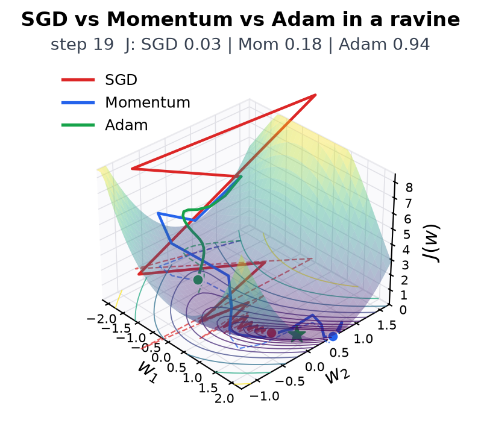
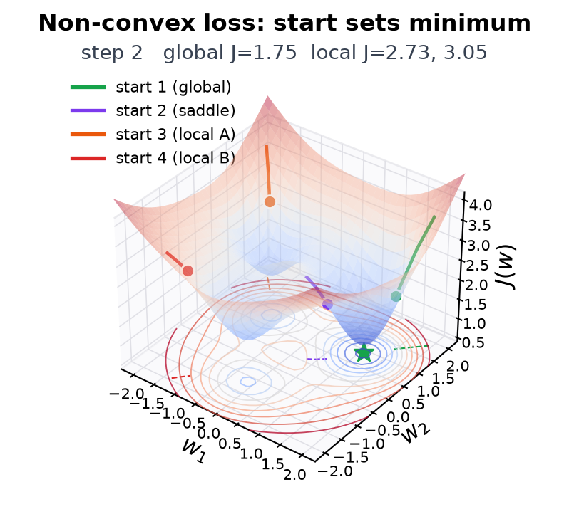
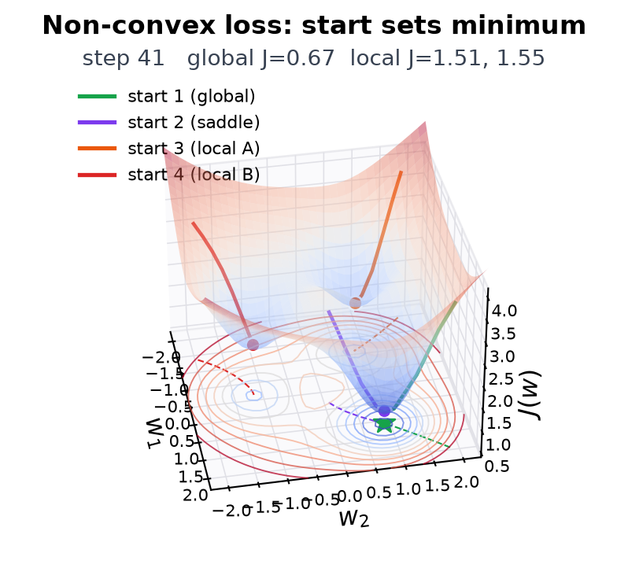
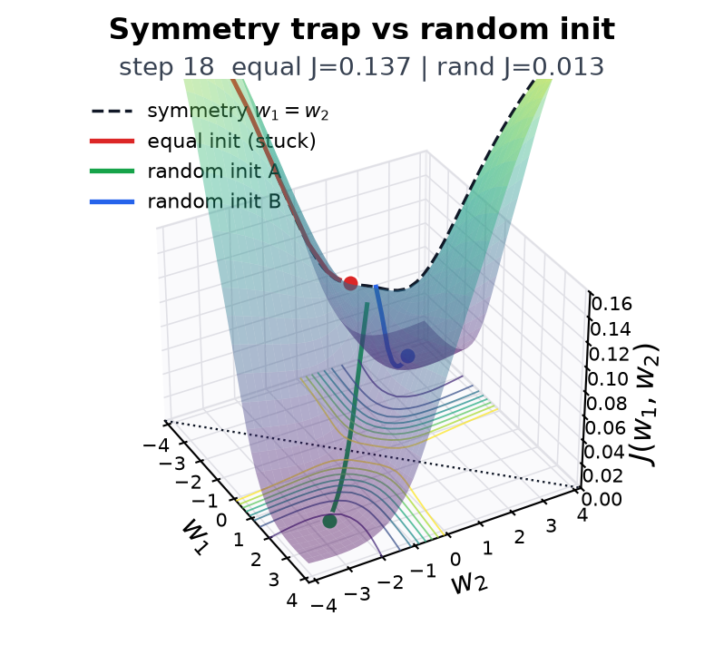
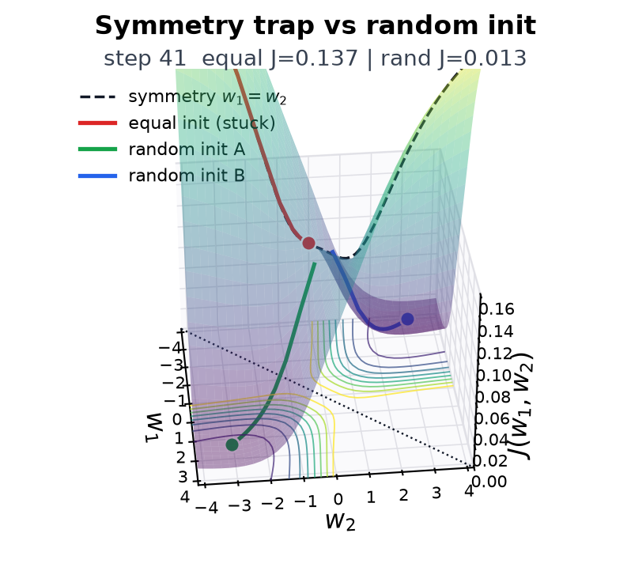
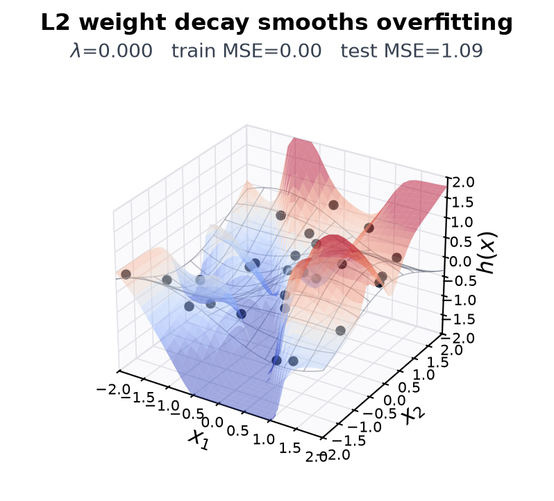
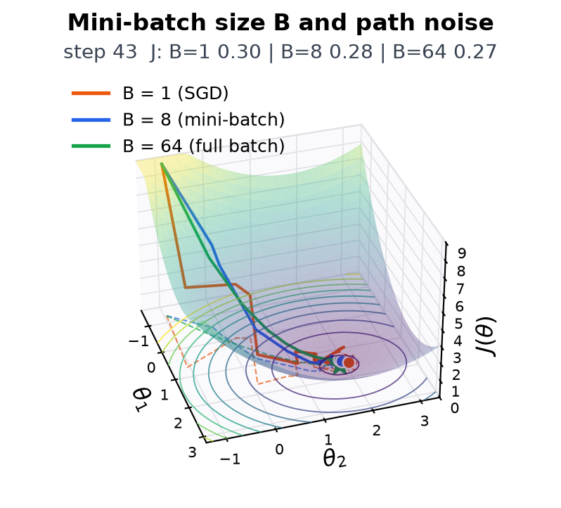

Neural Networks: Training
Theory
इस lecture में: 2-layer network के लिए chain rule से backpropagation और हर matrix का shape, \(L\)-layer network का general \(\delta\) recursion और vectorization, gradient checking, non-convex loss landscape, initialization (symmetry problem, Xavier और He), vanishing और exploding gradients, modern optimizers (mini-batch SGD, Momentum, RMSProp, Adam) और learning-rate decay, regularization (\(L_2\), inverted dropout, early stopping), और normalization।
1. एक line में idea
पिछले lecture में हमने देखा कि forward propagation input \(x\) से शुरू करके layer-दर-layer prediction \(a^{[L]}\) तक कैसे पहुँचता है। पर शुरू में weights बेतरतीब होते हैं, इसलिए prediction गलत होता है। Network को सिखाने के लिए हमें यह जानना है कि हर एक weight \(W^{[l]}_{jk}\) को थोड़ा बदलने से कुल cost \(J\) कितना बदलेगा, यानी हमें हर layer के लिए gradient \(\nabla_{W^{[l]}} J\) और \(\nabla_{b^{[l]}} J\) चाहिए।
Backpropagation असल में calculus का chain rule ही है, जिसे आख़िरी layer से पहली layer की तरफ़ उल्टे क्रम में लगाया जाता है। बीच के नतीजे सहेजकर रखने से हज़ारों या लाखों weights के gradients सिर्फ़ एक forward pass और एक backward pass में निकल आते हैं। एक बार gradients मिल गए, तो सही initialization, अच्छा optimizer (जैसे Adam), regularization और normalization मिलकर गहरे और non-convex network को भी तेज़ी से और स्थिर तरीके से train कर देते हैं।
2. Setup और Notation
हम Lecture 10 का ही notation आगे बढ़ाएँगे। एक example \((x, y)\) के लिए \(a^{[0]} = x \in \mathbb{R}^{n^{[0]}}\) है, और हर layer \(l = 1, \dots, L\) के लिए forward pass यह है:
\[z^{[l]} = W^{[l]} a^{[l-1]} + b^{[l]}, \qquad a^{[l]} = g^{[l]}(z^{[l]})\]
एक अकेले example पर loss \(\mathcal{L}(a^{[L]}, y)\) है, और पूरे \(m\) examples पर औसत cost \(J(W, b) = \frac{1}{m} \sum_{i=1}^{m} \mathcal{L}(a^{[L](i)}, y^{(i)})\) है। Backpropagation को साफ़ लिखने के लिए हम हर layer पर एक सबसे काम की राशि परिभाषित करते हैं, जिसे error signal कहते हैं:
\[\delta^{[l]} = \frac{\partial \mathcal{L}}{\partial z^{[l]}} \in \mathbb{R}^{n^{[l]}}\]
\(\delta^{[l]}_j\) का सीधा मतलब यह है: अगर layer \(l\) के \(j\)-वें neuron के pre-activation \(z^{[l]}_j\) को ज़रा सा हिलाएँ, तो अंतिम loss \(\mathcal{L}\) कितना बदलेगा। नीचे की तालिका में shapes एक नज़र में रखे हैं:
| राशि | एक example का shape | \(m\) examples का vectorized shape | मतलब |
|---|---|---|---|
| \(W^{[l]}, \nabla_{W^{[l]}} J\) | \(n^{[l]} \times n^{[l-1]}\) | \(n^{[l]} \times n^{[l-1]}\) | layer \(l\) के weights और उनका gradient |
| \(b^{[l]}, \nabla_{b^{[l]}} J\) | \(n^{[l]} \times 1\) | \(n^{[l]} \times 1\) | layer \(l\) के biases और उनका gradient |
| \(z^{[l]}, a^{[l]}\) | \(n^{[l]} \times 1\) | \(n^{[l]} \times m\) | pre-activations और activations |
| \(\delta^{[l]}\) (या \(dZ^{[l]}\)) | \(n^{[l]} \times 1\) | \(n^{[l]} \times m\) | \(z^{[l]}\) के सापेक्ष loss का gradient |
एक काम का नियम याद रखें: किसी भी parameter के gradient का shape हमेशा ठीक उस parameter के अपने shape के बराबर होता है।
3. 2-Layer Network में Chain Rule से Backpropagation
मान लीजिए हमारे पास \(L = 2\) layers वाला multi-class network है: input \(x \in \mathbb{R}^{n^{[0]}}\), hidden layer में activation \(g^{[1]}\) से \(a^{[1]} \in \mathbb{R}^{n^{[1]}}\), और output layer में \(K = n^{[2]}\) classes के लिए softmax activation \(a^{[2]}_k = \frac{e^{z^{[2]}_k}}{\sum_{c=1}^{K} e^{z^{[2]}_c}}\) है। सही जवाब one-hot vector \(y \in \mathbb{R}^{K}\) है (जहाँ सही class पर \(1\) और बाकी जगह \(0\) है, इसलिए \(\sum_{c=1}^{K} y_c = 1\)), और cross-entropy loss यह है:
\[\mathcal{L}(a^{[2]}, y) = -\sum_{c=1}^{K} y_c \log a^{[2]}_c\]
अब हम पीछे से आगे की ओर चारों gradients और उनके shapes निकालते हैं।
Step 1: Output layer का error \(\delta^{[2]}\)
हमें हर \(k \in \{1, \dots, K\}\) के लिए \(\delta^{[2]}_k = \frac{\partial \mathcal{L}}{\partial z^{[2]}_k}\) चाहिए। \(\log a^{[2]}_c = z^{[2]}_c - \log \sum_{r=1}^{K} e^{z^{[2]}_r}\) लिखने से derivative तुरंत साफ़ दिखता है:
\[\delta^{[2]}_k = -\sum_{c=1}^{K} y_c \frac{\partial}{\partial z^{[2]}_k} \left( z^{[2]}_c - \log \sum_{r=1}^{K} e^{z^{[2]}_r} \right) = -y_k + \left(\sum_{c=1}^{K} y_c\right) \frac{e^{z^{[2]}_k}}{\sum_{r=1}^{K} e^{z^{[2]}_r}} = a^{[2]}_k - y_k\]
पूरे vector के रूप में:
\[\delta^{[2]} = a^{[2]} - y \in \mathbb{R}^{n^{[2]} \times 1}\]
खास बात यह है कि Lecture 10 के तीनों मानक जोड़ों (sigmoid के साथ log loss, softmax के साथ cross-entropy, और linear output के साथ \(\frac{1}{2}\|a^{[2]} - y\|^2\)) के लिए \(\delta^{[2]} = a^{[2]} - y\) का ठीक यही सरल रूप मिलता है। यह सिर्फ़ prediction और सच का अंतर है।
Step 2: Output layer के weights \(W^{[2]}\) और bias \(b^{[2]}\) का gradient
चूँकि \(z^{[2]}_j = \sum_{k=1}^{n^{[1]}} W^{[2]}_{jk} a^{[1]}_k + b^{[2]}_j\) है, इसलिए \(W^{[2]}_{jk}\) सिर्फ़ \(z^{[2]}_j\) को प्रभावित करता है, और \(\frac{\partial z^{[2]}_j}{\partial W^{[2]}_{jk}} = a^{[1]}_k\) है। Chain rule से:
\[\frac{\partial \mathcal{L}}{\partial W^{[2]}_{jk}} = \frac{\partial \mathcal{L}}{\partial z^{[2]}_j} \frac{\partial z^{[2]}_j}{\partial W^{[2]}_{jk}} = \delta^{[2]}_j a^{[1]}_k, \qquad \frac{\partial \mathcal{L}}{\partial b^{[2]}_j} = \delta^{[2]}_j \cdot 1 = \delta^{[2]}_j\]
सारे \((j, k)\) को एक साथ matrix रूप में लिखें तो यह एक outer product बन जाता है:
\[\nabla_{W^{[2]}} \mathcal{L} = \delta^{[2]} (a^{[1]})^T \in \mathbb{R}^{n^{[2]} \times n^{[1]}}, \qquad \nabla_{b^{[2]}} \mathcal{L} = \delta^{[2]} \in \mathbb{R}^{n^{[2]} \times 1}\]
Shape जाँचें: \((n^{[2]} \times 1)\) गुणा \((1 \times n^{[1]})\) से \((n^{[2]} \times n^{[1]})\) मिलता है, जो ठीक \(W^{[2]}\) का shape है।
Step 3: गलती को hidden layer तक पीछे भेजना (\(\delta^{[1]}\))
Hidden unit \(a^{[1]}_k\) का असर आगे की layer के सारे \(z^{[2]}_1, \dots, z^{[2]}_{n^{[2]}}\) पर पड़ता है। इसलिए multivariable chain rule में हमें उन सभी रास्तों का जोड़ लेना होगा:
\[\frac{\partial \mathcal{L}}{\partial a^{[1]}_k} = \sum_{j=1}^{n^{[2]}} \frac{\partial \mathcal{L}}{\partial z^{[2]}_j} \frac{\partial z^{[2]}_j}{\partial a^{[1]}_k} = \sum_{j=1}^{n^{[2]}} \delta^{[2]}_j W^{[2]}_{jk} = \left( (W^{[2]})^T \delta^{[2]} \right)_k\]
ध्यान दें कि forward pass में \(W^{[2]}\) से गुणा हुआ था, और backward pass में \((W^{[2]})^T\) से गुणा हो रहा है: यही weights के रास्ते गलती को पीछे भेजना है। अब \(a^{[1]}_k = g^{[1]}(z^{[1]}_k)\) है, तो \(\frac{\partial a^{[1]}_k}{\partial z^{[1]}_k} = g^{[1]\prime}(z^{[1]}_k)\) से element-wise गुणा (\(\odot\), यानी Hadamard product) हो जाता है:
\[\delta^{[1]} = \left( (W^{[2]})^T \delta^{[2]} \right) \odot g^{[1]\prime}(z^{[1]}) \in \mathbb{R}^{n^{[1]} \times 1}\]
Shape जाँचें: \((n^{[1]} \times n^{[2]})\) गुणा \((n^{[2]} \times 1)\) देता है \((n^{[1]} \times 1)\), और \(g^{[1]\prime}(z^{[1]})\) भी \((n^{[1]} \times 1)\) है।
Step 4: पहली layer के weights \(W^{[1]}\) और bias \(b^{[1]}\) का gradient
ठीक Step 2 वाले तर्क से, जहाँ पिछली activation \(a^{[0]} = x\) है:
\[\nabla_{W^{[1]}} \mathcal{L} = \delta^{[1]} x^T \in \mathbb{R}^{n^{[1]} \times n^{[0]}}, \qquad \nabla_{b^{[1]}} \mathcal{L} = \delta^{[1]} \in \mathbb{R}^{n^{[1]} \times 1}\]
Shape फिर से \((n^{[1]} \times 1) \cdot (1 \times n^{[0]}) = n^{[1]} \times n^{[0]}\) है, जो ठीक \(W^{[1]}\) का shape है।
4. General \(\delta\) Recursion और Vectorized Algorithm
2-layer वाली कहानी किसी भी गहराई \(L\) के लिए ज्यों की त्यों दोहराई जाती है। बस आख़िरी layer से शुरू करें और \(l = L-1, L-2, \dots, 1\) तक पीछे चलते जाएँ:
\[\begin{aligned} \delta^{[L]} &= \nabla_{a^{[L]}} \mathcal{L} \odot g^{[L]\prime}(z^{[L]}) && \text{(मानक output-loss जोड़ों के लिए सीधे } a^{[L]} - y \text{)} \\ \delta^{[l]} &= \left( (W^{[l+1]})^T \delta^{[l+1]} \right) \odot g^{[l]\prime}(z^{[l]}), && l = L-1, \dots, 1 \\ \nabla_{W^{[l]}} \mathcal{L} &= \delta^{[l]} (a^{[l-1]})^T, \qquad \nabla_{b^{[l]}} \mathcal{L} = \delta^{[l]}, && l = 1, \dots, L \end{aligned}\]
यह इतना तेज़ क्यों है? अगर हमारे पास कुल \(P\) weights हों और हम हर weight को अलग-अलग हिलाकर cost निकालें, तो \(P\) बार forward pass चलाना पड़ेगा, यानी समय \(O(P^2)\) जैसा हो जाएगा। Backpropagation में forward pass के दौरान हर layer के \(z^{[l]}\) और \(a^{[l]}\) memory में बचा (cache कर) लिए जाते हैं। फिर backward pass उन्हीं सहेजे हुए मानों को इस्तेमाल करके सिर्फ़ \(O(P)\) काम में सारे gradients निकाल देता है।
\(m\) examples पर Vectorized रूप
जब \(m\) examples को columns में रखकर \(X \in \mathbb{R}^{n^{[0]} \times m}\) और \(Y \in \mathbb{R}^{n^{[L]} \times m}\) बनाया जाता है, तो \(\delta^{[l]}\) के columns जोड़कर matrix \(dZ^{[l]} \in \mathbb{R}^{n^{[l]} \times m}\) लिखते हैं। पूरा एक training step चार साफ़ चरणों में चलता है:
- Forward pass (और cache): \(A^{[0]} = X\) से शुरू करके \(l = 1, \dots, L\) के लिए \(Z^{[l]} = W^{[l]} A^{[l-1]} + b^{[l]}\) और \(A^{[l]} = g^{[l]}(Z^{[l]})\) निकालें और सहेज लें।
- Output error: \(dZ^{[L]} = A^{[L]} - Y \in \mathbb{R}^{n^{[L]} \times m}\)।
- Backward loop (\(l = L, L-1, \dots, 1\)): \[dW^{[l]} = \frac{1}{m} dZ^{[l]} (A^{[l-1]})^T, \qquad db^{[l]} = \frac{1}{m} \sum_{i=1}^{m} dZ^{[l](i)}\] और अगर \(l > 1\) है, तो पिछली layer के लिए \(dZ^{[l-1]} = \left((W^{[l]})^T dZ^{[l]}\right) \odot g^{[l-1]\prime}(Z^{[l-1]})\) निकालें। ध्यान दें कि matrix गुणन \(dZ^{[l]} (A^{[l-1]})^T\) अपने आप सारे \(m\) outer products का जोड़ कर देता है।
- Update: हर layer में \(W^{[l]} := W^{[l]} - \alpha\, dW^{[l]}\) और \(b^{[l]} := b^{[l]} - \alpha\, db^{[l]}\) (या नीचे दिए किसी modern optimizer का कदम)।
5. Gradient Checking: कोड की जाँच कैसे करें
Backpropagation के कोड में transpose या index की एक छोटी सी गलती भी ऐसी होती है कि loss थोड़ा घटता दिखता है, पर network अपनी असली क्षमता से बहुत खराब सीखता है। इसे पकड़ने का अचूक तरीका gradient checking है। सारे parameters \((W^{[1]}, b^{[1]}, \dots, W^{[L]}, b^{[L]})\) को खोलकर एक लंबा vector \(\theta \in \mathbb{R}^{P}\) मान लें। किसी \(k\)-वें parameter के लिए दो-तरफ़ा (central) finite difference यह है:
\[\hat{g}_k = \frac{J(\theta + \epsilon e_k) - J(\theta - \epsilon e_k)}{2\epsilon}\]
जहाँ \(e_k\) वह unit vector है जिसमें सिर्फ़ \(k\)-वें स्थान पर \(1\) है, और \(\epsilon \approx 10^{-5}\) से \(10^{-7}\) के बीच रखा जाता है। एक-तरफ़ा अंतर \(\frac{J(\theta + \epsilon e_k) - J(\theta)}{\epsilon}\) की त्रुटि \(O(\epsilon)\) होती है, जबकि central difference में Taylor expansion के सम पद कट जाते हैं और त्रुटि बहुत छोटी, \(O(\epsilon^2)\), रह जाती है। फिर backpropagation के analytical gradient \(g\) से relative error नापते हैं:
\[\text{rel\_err} = \frac{\|\hat{g} - g\|_2}{\|\hat{g}\|_2 + \|g\|_2}\]
Smooth activations (जैसे tanh, sigmoid) पर यह \(10^{-7}\) या उससे छोटा आना चाहिए। ReLU में \(z = 0\) पर कोना (kink) होता है; अगर \(\theta \pm \epsilon e_k\) उस कोने के आर-पार चला जाए तो एकाध coordinate पर अंतर \(10^{-4}\) तक दिख सकता है। याद रखें कि finite differences बहुत धीमा है (हर weight के लिए दो forward passes), इसलिए कोड सही साबित हो जाने के बाद असली training में gradient checking हमेशा बंद कर दें।
6. Non-Convex Landscape
Linear और Logistic Regression में cost \(J(\theta)\) एक convex कटोरा था, इसलिए जहाँ से भी शुरू करें, एक ही global minimum मिलता था। Neural networks में hidden layers के गुणा के कारण \(J(W, b)\) non-convex होता है:
- अनेक minima और symmetry: किसी hidden layer के दो neurons की जगह आपस में बदल दें (और अगली layer के संबंधित weights भी बदल दें), तो network का output बिल्कुल नहीं बदलता। इसलिए एक ही जैसे अनगिनत minima मौजूद होते हैं, और इनके अलावा अलग-अलग गुणवत्ता वाले local minima भी हो सकते हैं। अलग random शुरुआतों से छोड़ी गई गेंदें अलग घाटियों में उतर सकती हैं।
- Saddle points: ऊँचे dimensions (\(P\) हज़ारों-लाखों में) में असली रुकावट अक्सर खराब local minimum नहीं, बल्कि saddle points होते हैं। यहाँ \(\nabla J = 0\) होता है, पर Hessian की कुछ दिशाओं में घुमाव ऊपर और कुछ में नीचे होता है। इनके आस-पास ढलान बहुत सपाट (plateau) होती है जहाँ सादा Gradient Descent सुस्त पड़ जाता है।
- संकरी घाटियाँ (ravines): कुछ दिशाओं में surface बहुत खड़ी होती है और कुछ में बहुत सपाट। बड़ा \(\alpha\) रखने पर कदम दीवारों से टकराकर उछलते हैं, और छोटा \(\alpha\) रखने पर घाटी की तली में चलना बेहद धीमा हो जाता है।
7. Initialization: Symmetry Problem, Xavier और He
Symmetry problem (शून्य से शुरू क्यों न करें?)
मान लीजिए आपने \(W^{[l]} = 0\) (या सारे weights एक ही बराबर संख्या \(c\)) रख दिए। तब पहली hidden layer के हर unit \(j\) को ठीक एक जैसा input मिलेगा, इसलिए \(z^{[1]}_1 = z^{[1]}_2 = \dots = z^{[1]}_{n^{[1]}}\) होगा और सारे activations \(a^{[1]}_j\) बराबर होंगे। अगर अगली layer के weights भी बराबर हैं, तो backward pass में हर hidden unit को ठीक बराबर error \(\delta^{[1]}_j\) मिलेगा, और हर weight में बिल्कुल एक जैसा बदलाव होगा।
नतीजा: training के कितने भी हज़ार steps चला लें, उस layer के सारे neurons हमेशा जुड़वाँ बने रहेंगे और \(n^{[l]}\) neurons मिलकर सिर्फ़ एक neuron जितना काम कर पाएँगे। इसे symmetry problem कहते हैं। इस समरूपता को तोड़ने (symmetry breaking) के लिए weights को random संख्याओं से शुरू करना अनिवार्य है। Biases \(b^{[l]}\) को \(0\) से शुरू करना बिल्कुल ठीक है, क्योंकि random \(W^{[l]}\) पहले ही हर unit को अलग दिशा दे देते हैं।
Xavier और He initialization
सिर्फ़ random होना काफ़ी नहीं है, उनका scale भी ठीक होना चाहिए। अगर weights बहुत छोटे हों तो हर layer के बाद activations सिकुड़कर \(0\) के पास चले जाते हैं; बहुत बड़े हों तो activations या तो उछल जाते हैं या sigmoid/tanh को saturate कर देते हैं।
एक neuron \(z_j = \sum_{k=1}^{n_{\text{in}}} W_{jk} a_k\) को देखें, जहाँ \(n_{\text{in}} = n^{[l-1]}\) पिछली layer के units की संख्या है। मान लें कि inputs \(a_k\) और weights \(W_{jk}\) स्वतंत्र हैं, दोनों का mean \(0\) है। तब:
\[\mathrm{Var}(z_j) = \sum_{k=1}^{n_{\text{in}}} \mathrm{Var}(W_{jk} a_k) = n_{\text{in}}\, \mathrm{Var}(W)\, \mathrm{Var}(a)\]
- Xavier (Glorot) initialization (tanh या sigmoid के लिए): \(z = 0\) के पास \(\tanh(z) \approx z\) होता है। अगर हम चाहते हैं कि हर layer में \(\mathrm{Var}(z) \approx \mathrm{Var}(a)\) बना रहे, तो \(n_{\text{in}} \mathrm{Var}(W) = 1\) होना चाहिए: \[W^{[l]}_{jk} \sim \mathcal{N}\!\left(0,\, \frac{1}{n^{[l-1]}}\right) \quad \text{या forward और backward दोनों के संतुलन के लिए} \quad \mathcal{N}\!\left(0,\, \frac{2}{n^{[l-1]} + n^{[l]}}\right)\]
- He initialization (ReLU के लिए): ReLU सारे negative मानों को काटकर \(0\) कर देता है, जिससे लगभग आधे हिस्से की variance खत्म हो जाती है और \(\mathrm{Var}(\max(0, z)) = \frac{1}{2}\mathrm{Var}(z)\) रह जाती है। इसे संतुलित करने के लिए दुगुना variance चाहिए: \[W^{[l]}_{jk} \sim \mathcal{N}\!\left(0,\, \frac{2}{n^{[l-1]}}\right)\]
8. Vanishing और Exploding Gradients
गहरे network में \(\delta\) recursion को बार-बार खोलें तो पहली layer के error \(\delta^{[1]}\) में सारी अगली layers के matrices और derivatives का लंबा गुणनफल आता है:
\[\delta^{[1]} = D^{[1]} (W^{[2]})^T D^{[2]} (W^{[3]})^T \cdots (W^{[L]})^T \delta^{[L]}, \qquad \text{जहाँ } D^{[l]} = \mathrm{diag}\!\left(g^{[l]\prime}(z^{[l]})\right)\]
यही लंबा गुणनफल दो बड़ी समस्याएँ पैदा करता है:
- Vanishing gradients: Sigmoid के लिए \(g'(z) = \sigma(z)(1 - \sigma(z))\) का अधिकतम मान \(z = 0\) पर सिर्फ़ \(\frac{1}{4}\) होता है, और \(|z|\) बड़ा होते ही यह लगभग \(0\) हो जाता है। अगर weights सामान्य आकार के हैं, तो हर layer से पीछे गुज़रते समय gradient कम से कम चार गुना सिकुड़ता जाता है: \(L\) layers के बाद \((1/4)^L\) बहुत सूक्ष्म हो जाता है। आख़िरी layers तो सीखती हैं, पर शुरुआती layers के weights लगभग जमे रह जाते हैं। ReLU इसे काफ़ी हद तक हल करता है क्योंकि \(z > 0\) पर उसका derivative ठीक \(1\) रहता है (हालाँकि अगर किसी neuron का \(z\) हर example पर negative हो जाए तो उसका gradient हमेशा के लिए \(0\) हो जाता है, जिसे dying ReLU कहते हैं)।
- Exploding gradients: इसके उलट, अगर weight matrices के singular values \(1\) से बड़े हों (जैसे खराब initialization में), तो यही गुणनफल गहराई के साथ घातीय रूप से बढ़ता है (जैसे \(2^L\)), कदम बहुत विशाल हो जाते हैं और loss उछलकर
NaNबन जाता है। इसका इलाज सही initialization (Xavier/He), छोटे learning rate, और ज़रूरत पड़ने पर gradient clipping (यदि \(\|g\|_2 > \tau\) हो तो \(g := \tau \frac{g}{\|g\|_2}\) कर देना) है।
9. Optimizers और Learning-Rate Decay
मान लीजिए किसी parameter vector को \(\theta\) और step \(t\) पर उसके mini-batch gradient को \(g_t = \nabla_\theta J_{\mathcal{B}_t}(\theta_{t-1})\) लिखें।
Mini-batch SGD
पूरे \(m\) examples का batch gradient हर कदम के लिए बहुत महँगा होता है, और \(1\) example वाला शुद्ध SGD बहुत शोर भरा (noisy) होता है तथा vectorization का पूरा लाभ नहीं उठा पाता। बीच का रास्ता mini-batch SGD है: हर epoch में data को फेरबदल (shuffle) करके \(B\) आकार के टुकड़ों (अक्सर \(B \in \{32, 64, 128, 256\}\)) में बाँट लें और हर टुकड़े \(\mathcal{B}_t\) पर update करें:
\[g_t = \frac{1}{B} \sum_{i \in \mathcal{B}_t} \nabla_\theta \mathcal{L}(a^{[L](i)}, y^{(i)}), \qquad \theta_t = \theta_{t-1} - \alpha\, g_t\]
Gradient के अनुमान का variance लगभग \(\frac{1}{B}\) के अनुपात में घटता है। छोटा \(B\) रास्ते में थोड़ा लाभकारी शोर रखता है जो उथले गड्ढों और saddle points से निकलने में मदद करता है, जबकि बड़ा \(B\) ज़्यादा चिकना रास्ता और तेज़ matrix गुणन देता है।
Momentum
संकरी घाटी (ravine) में \(g_t\) खड़ी दीवारों के बीच हर कदम पर चिह्न बदलता है, जबकि घाटी की तली की दिशा में उसका चिह्न लगातार एक जैसा रहता है। Momentum गेंद को जड़त्व (velocity \(v_t\)) देता है, यानी पिछले gradients का exponentially weighted moving average रखता है (\(v_0 = 0\), आम तौर पर \(\beta = 0.9\)):
\[v_t = \beta v_{t-1} + (1 - \beta) g_t, \qquad \theta_t = \theta_{t-1} - \alpha\, v_t\]
उलट-पलट होने वाली दिशाएँ औसत में आपस में कट जाती हैं (zig-zag दब जाता है), और सीधी ढलान वाली दिशा में गति जुड़कर तेज़ हो जाती है। (कई पुस्तकों में समतुल्य रूप \(v_t = \beta v_{t-1} + g_t\) भी लिखा जाता है, जिसमें बस \(\alpha\) में \((1-\beta)\) समाहित होता है।)
RMSProp
हर parameter की ढलान अलग होती है: जिस दिशा में gradient हमेशा बड़ा रहता है वहाँ छोटा कदम चाहिए, और जहाँ ढलान बहुत धीमी है वहाँ बड़ा कदम। RMSProp हर coordinate के gradient के वर्ग (\(g_t \odot g_t\)) का moving average \(s_t\) रखता है (\(s_0 = 0\), आम तौर पर \(\beta_2 = 0.99\) या \(0.999\), और शून्य से भाग रोकने के लिए \(\epsilon = 10^{-8}\)):
\[s_t = \beta_2 s_{t-1} + (1 - \beta_2) (g_t \odot g_t), \qquad \theta_t = \theta_{t-1} - \alpha \frac{g_t}{\sqrt{s_t} + \epsilon}\]
Adam (Adaptive Moment Estimation)
Adam आज व्यवहार में सबसे लोकप्रिय शुरुआती optimizer है। यह Momentum (पहला moment \(m_t\)) और RMSProp (दूसरा moment \(v_t\)) दोनों को जोड़ता है, और साथ में शुरुआती कदमों के शून्य की ओर झुकाव को ठीक करने के लिए bias correction लगाता है (\(m_0 = 0, v_0 = 0\)):
\[\begin{aligned} m_t &= \beta_1 m_{t-1} + (1 - \beta_1) g_t, & v_t &= \beta_2 v_{t-1} + (1 - \beta_2) (g_t \odot g_t) \\ \hat{m}_t &= \frac{m_t}{1 - \beta_1^t}, & \hat{v}_t &= \frac{v_t}{1 - \beta_2^t} \\ \theta_t &= \theta_{t-1} - \alpha \frac{\hat{m}_t}{\sqrt{\hat{v}_t} + \epsilon} \end{aligned}\]
Bias correction क्यों? जैसे \(t = 1\) पर और \(\beta_2 = 0.999\) पर \(v_1 = 0.001\, g_1^2\) होता है, जो असली \(g_1^2\) से हज़ार गुना छोटा है; \(1 - \beta_2^1 = 0.001\) से भाग देते ही \(\hat{v}_1 = g_1^2\) तुरंत सही पैमाने पर आ जाता है, और बड़े \(t\) पर \(\beta^t \to 0\) होने से यह सुधार अपने आप हट जाता है। मानक defaults हैं: \(\beta_1 = 0.9\), \(\beta_2 = 0.999\), \(\epsilon = 10^{-8}\), और \(\alpha \approx 10^{-3}\)।
Learning-Rate Decay
Mini-batch noise के कारण स्थिर \(\alpha\) रखने पर parameters अंत में minimum के चारों ओर उछलते रहते हैं। शुरू में तेज़ चलने और अंत में शांत होकर बसने के लिए epoch या step \(t\) के साथ \(\alpha_t\) को धीरे-धीरे घटाया जाता है:
- Step या Exponential decay: कुछ तय epochs के बाद \(\alpha\) को आधा कर देना, या \(\alpha_t = \alpha_0 \gamma^t\) (\(\gamma < 1\))।
- Inverse time decay: \(\alpha_t = \frac{\alpha_0}{1 + k t}\)।
- Cosine decay: कुल \(T\) epochs में \(\alpha_t = \frac{1}{2} \alpha_0 \left(1 + \cos \frac{\pi t}{T}\right)\), जो चिकने ढंग से शून्य की ओर उतरता है।
10. Regularization: Overfitting को रोकना
बड़े neural networks में parameters इतने ज़्यादा होते हैं कि वे training data के शोर तक को रट सकते हैं (training loss लगभग \(0\), पर test loss ऊँचा)। इसे रोकने के तीन मुख्य औज़ार हैं:
1. \(L_2\) Regularization (Weight Decay)
Cost में सारे weight matrices के Frobenius norm का वर्ग जोड़ देते हैं (आम तौर पर biases \(b^{[l]}\) को छोड़ दिया जाता है, क्योंकि वे सिर्फ़ offset बदलते हैं, वक्रता नहीं):
\[J_{\text{reg}}(W, b) = J(W, b) + \frac{\lambda}{2m} \sum_{l=1}^{L} \|W^{[l]}\|_F^2, \qquad \|W^{[l]}\|_F^2 = \sum_{j, k} \left(W^{[l]}_{jk}\right)^2\]
इससे हर layer के weight gradient में बस एक सीधा पद जुड़ जाता है: \(dW^{[l]}_{\text{reg}} = dW^{[l]} + \frac{\lambda}{m} W^{[l]}\)। Gradient descent update लिखें तो \(W^{[l]} := \left(1 - \frac{\alpha \lambda}{m}\right) W^{[l]} - \alpha\, dW^{[l]}\), यानी हर कदम पर हर weight थोड़ा सिकुड़ता है। छोटे weights का मतलब है कि network की output surface ज़्यादा चिकनी रहती है और एकाध शोर वाले बिंदु के पीछे तीखे मोड़ नहीं बनाती।
2. Inverted Dropout
Training के हर forward step में हर hidden layer के हर unit को स्वतंत्र रूप से प्रायिकता \(p\) (keep probability, जैसे \(p = 0.8\) या \(0.5\)) से जीवित रखते हैं और प्रायिकता \(1 - p\) से शून्य कर देते हैं। यदि binary mask \(d^{[l]} \in \{0, 1\}^{n^{[l]}}\) में \(P(d^{[l]}_j = 1) = p\) हो, तो inverted dropout यह करता है:
\[\tilde{a}^{[l]} = \frac{d^{[l]} \odot a^{[l]}}{p}\]
\(p\) से भाग क्यों दिया? क्योंकि \(\mathbb{E}[d^{[l]}_j] = p\) है, इसलिए \(p\) से भाग देने पर \(\mathbb{E}[\tilde{a}^{[l]}] = \frac{p}{p} a^{[l]} = a^{[l]}\) रहता है, यानी अगली layer को मिलने वाले कुल संकेत का अपेक्षित आकार training में वैसा ही रहता है जैसा बिना dropout के होता। इसका बड़ा फ़ायदा यह है कि test समय पर dropout पूरी तरह बंद रहता है और किसी weight को scale करने की ज़रूरत नहीं पड़ती। ध्यान रखें: backward pass में भी ठीक उसी सहेजे हुए mask से \(\tilde{\delta}^{[l]}\) वाले रास्ते में \(\frac{d^{[l]}}{p}\) का गुणा लगता है, क्योंकि जो neuron उस step में बंद था, उसका gradient भी \(0\) होना चाहिए। सहज रूप से dropout किसी भी एक neuron को दूसरे किसी खास neuron की बैसाखी पर निर्भर (co-adapt) नहीं होने देता और कई छोटे उप-networks के औसत जैसा असर देता है।
3. Early Stopping
हर epoch पर एक अलग validation set पर loss नापते रहें। शुरू में training और validation दोनों loss गिरते हैं; जैसे ही overfitting शुरू होती है, training loss तो गिरता रहता है पर validation loss ऊपर मुड़ जाता है। जहाँ validation loss सबसे कम था, उसी मोड़ के weights सहेजकर लौटा देना early stopping है।
11. Normalization
Lecture 2 की तरह सबसे पहला नियम input normalization है: हर input feature को सिर्फ़ training set के mean \(\mu\) और standard deviation \(\sigma\) से \(\tilde{x} = \frac{x - \mu}{\sigma}\) कर लें, ताकि पहली layer की cost घाटी एक दिशा में पिचकी न हो।
गहरे networks में यही विचार बीच की hidden layers पर भी लगाया जाता है। जैसे-जैसे पिछली layers के weights बदलते हैं, अगली layer के inputs \(z^{[l]}\) का फैलाव हर कदम पर खिसकता रहता है। Batch Normalization एक mini-batch के \(B\) examples पर हर coordinate का mean और variance निकालकर उसे मानक बना देता है, और फिर सीखे जाने वाले scale \(\gamma\) और shift \(\beta\) लगा देता है:
\[\mu = \frac{1}{B} \sum_{i=1}^{B} z^{(i)}, \qquad \sigma^2 = \frac{1}{B} \sum_{i=1}^{B} \left(z^{(i)} - \mu\right)^2, \qquad \hat{z}^{(i)} = \frac{z^{(i)} - \mu}{\sqrt{\sigma^2 + \epsilon}}, \qquad \tilde{z}^{(i)} = \gamma \odot \hat{z}^{(i)} + \beta\]
यहाँ \(\gamma\) और \(\beta\) इसलिए रखे जाते हैं ताकि अगर किसी layer को मानक mean \(0\) और variance \(1\) पसंद न हो, तो network खुद सबसे अच्छा फैलाव सीख सके। Test समय पर एक अकेले example का batch mean नहीं होता, इसलिए training के दौरान संचित किए गए running mean और running variance इस्तेमाल किए जाते हैं। (यदि normalization mini-batch के बजाय एक ही example के सारे units पर किया जाए, तो उसे Layer Normalization कहते हैं, जो batch size पर निर्भर नहीं करता और Transformers में मानक है।) Normalization से loss landscape ज़्यादा चिकना हो जाता है, gradients स्थिर रहते हैं, और बड़े learning rates बेखटके चलते हैं।
12. Practical बातें और आम गलतियाँ
- पहले एक छोटे batch को overfit करें: पूरे dataset पर घंटों चलाने से पहले सिर्फ़ 10-20 examples लें, regularization बंद करें (\(\lambda = 0\), कोई dropout नहीं), और देखें कि training loss लगभग \(0\) तक पहुँचता है या नहीं। अगर नहीं पहुँचता, तो backpropagation, shapes, या learning rate में पक्का bug है।
- Gradient check सिर्फ़ debugging के लिए रखें: छोटे network (जैसे 4-5 units), \(\lambda > 0\) समेत, बिना dropout के relative error जाँच लें; एक बार \(< 10^{-7}\) दिख जाए तो इसे बंद कर दें।
- Initialization और activation की जोड़ी मिलाएँ: ReLU के साथ He initialization (\(\sqrt{2 / n^{[l-1]}}\)) और tanh/sigmoid के साथ Xavier initialization (\(\sqrt{1 / n^{[l-1]}}\)) लगाएँ; गलती से भी \(W^{[l]} = 0\) न रखें।
- Train बनाम Test mode अलग रखें: Dropout और BatchNorm का व्यवहार training और evaluation में अलग होता है। Test accuracy नापते समय dropout बंद करना भूलना एक बहुत आम गलती है।
- पहले \(\alpha\) को साधें: सारे hyperparameters में learning rate \(\alpha\) सबसे असरदार होता है। अगर शुरुआत समझ न आए, तो Adam के साथ \(\alpha = 10^{-3}\) से शुरू करें और log scale (\(3 \times 10^{-4}, 10^{-3}, 3 \times 10^{-3}\)) पर परखें।
13. खुद से पूछें
- एक 2-layer network में \(n^{[0]} = 64\), \(n^{[1]} = 32\), \(n^{[2]} = 10\) और mini-batch size \(B = 20\) है। Vectorized backpropagation में \(dZ^{[2]}\), \(dW^{[2]}\), \(dZ^{[1]}\) और \(dW^{[1]}\) में से प्रत्येक का ठीक-ठीक shape क्या होगा?
- मान लीजिए हम \(W^{[1]}\) और \(W^{[2]}\) को शून्य रख दें, पर biases \(b^{[1]}\) के सारे अवयव अलग-अलग संख्याओं से शुरू करें। क्या पहली ही iteration में symmetry टूट जाएगी, या कुछ और होगा? \(\nabla_{W^{[1]}} \mathcal{L}\) और \(\nabla_{W^{[2]}} \mathcal{L}\) के सूत्रों से जाँचें।
- Inverted dropout में यदि training के समय keep probability \(p = 0.5\) हो और कोई व्यक्ति गलती से \(\frac{1}{p}\) से भाग देना भूल जाए (यानी सिर्फ़ \(\tilde{a}^{[l]} = d^{[l]} \odot a^{[l]}\) रखे) और test समय पर भी कोई बदलाव न करे, तो test समय पर अगली layer के pre-activations \(z^{[l+1]}\) के आकार पर क्या असर पड़ेगा?
3D Animations



क्या देखें: संकरी और मुड़ी हुई घाटी (ravine) में खड़ी दीवारों की ढलान बहुत तेज़ है, जबकि तली की ढलान धीमी है। लाल गेंद (सादा SGD) हर कदम पर दीवारों के बीच zig-zag करती है और तली में धीरे रेंगती है। नीली गेंद (Momentum) पिछले gradients का औसत रखकर दीवारों के उछाल को दबा देती है और घाटी के घुमाव के साथ तेज़ बहती है। हरी गेंद (Adam) हर दिशा के step size को अपने आप संतुलित करके सबसे सीधे और जल्दी minimum (हरा तारा) तक पहुँच जाती है।



क्या देखें: Neural network का cost \(J(w)\) एक अकेला convex कटोरा नहीं होता; इसमें कई गहरे-उथले गड्ढे (local minima) और बीच की सपाट धारें (saddle regions) होती हैं। यहाँ चार अलग-अलग शुरुआती बिंदुओं से Gradient Descent चलाया गया है। हरी और बैंगनी गेंदें गहरे global minimum में उतर जाती हैं, जबकि नारंगी और लाल गेंदें पास के उथले local minima में फँसकर रुक जाती हैं। शुरुआत कहाँ हुई, इससे अंतिम नतीजा बदल सकता है।



क्या देखें: दो hidden units के weights \(w_1, w_2\) के ऊपर असली neural loss \(J(w_1, w_2)\) दिखाया गया है। काली टूटी रेखा \(w_1 = w_2\) की समरूप धार है, जहाँ दोनों neurons बिल्कुल जुड़वाँ हैं। लाल गेंद बराबर weights (\(w_1 = w_2\)) से शुरू होती है: दोनों gradients हर कदम पर बराबर रहते हैं, इसलिए वह इसी धार पर फँसी रहती है और कभी गहरी घाटी में नहीं उतर पाती। हरी और नीली गेंदें छोटे random अंतर से शुरू होकर समरूपता तोड़ देती हैं और दोनों अलग काम सीखकर \(J \approx 0\) वाले minima तक पहुँच जाती हैं।


क्या देखें: 6-layer गहरे network में backpropagation आख़िरी layer \(l = 6\) से पहली layer \(l = 1\) की ओर चलता है। खंभों की ऊँचाई हर layer के सापेक्ष gradient आकार \(\|\nabla_{W^{[l]}} J\|_F\) को दिखाती है। लाल पंक्ति (Sigmoid) में हर कदम पर \(g'(z) \le 0.25\) से गुणा होने के कारण खंभे तेज़ी से सिकुड़ते जाते हैं और \(l = 1, 2\) तक लगभग गायब हो जाते हैं। हरी पंक्ति (He initialization के साथ ReLU) में सक्रिय units पर \(g'(z) = 1\) रहता है, इसलिए शुरुआती layers तक भी मज़बूत संकेत पहुँचता है।



क्या देखें: काले बिंदु शोर भरे (noisy) training examples हैं और पतली स्लेटी जाली असली चिकनी function है। शुरू में \(\lambda = 0\) (बिना regularization) पर 20 hidden units वाला network शोर को भी रट लेता है: surface में तीखे पहाड़-गड्ढे बन जाते हैं और test MSE ऊँचा रहता है। जैसे-जैसे \(L_2\) weight decay \(\lambda\) बढ़ता है, बड़े weights सिकुड़ते हैं, तीखे मोड़ पिघलकर चिकने हो जाते हैं, और surface असली जाली के करीब आकर test error को घटा देती है।



क्या देखें: एक ही dataset (\(m = 64\)) और एक ही शुरुआती बिंदु से तीन अलग batch sizes के साथ उतरने के रास्ते दिखाए गए हैं। नारंगी रास्ता (\(B = 1\), शुद्ध SGD) हर कदम पर एक अकेले example का शोर झेलता है, इसलिए खूब लड़खड़ाता है। नीला रास्ता (\(B = 8\), mini-batch) में औसत लेने से शोर काफ़ी कम हो जाता है, पर वह तेज़ और लचीला बना रहता है। हरा रास्ता (\(B = 64\), full batch) बिल्कुल चिकना है क्योंकि हर कदम पूरे data का सटीक gradient लेता है।
Python Example
इसे खुद चलाएँ: cs229_hindi/.venv/bin/python cs229_hindi/chapters/L11_neural_networks_training/example.py
"""Lecture 11 example: Neural Network Training शुरू से (सिर्फ़ NumPy). sklearn digits (8x8 हाथ से लिखे अंक, 10 classes) पर 2-layer MLP: 1) Central finite differences से backpropagation का gradient check, 2) Zero init (symmetry trap) बनाम He initialization, 3) Mini-batch SGD, Momentum और Adam की तुलना, 4) छोटे subset पर L2 weight decay और inverted dropout से train-test gap घटाना। Notation: X का हर column एक example है, यानी X का shape (64, m) है। """ import numpy as np import matplotlib.pyplot as plt from sklearn.datasets import load_digits rng = np.random.default_rng(42) digits = load_digits() perm = rng.permutation(len(digits.data)) X_all, y_all = digits.data[perm].T.astype(float), digits.target[perm] Y_all = np.eye(10)[y_all].T # one-hot (10, 1797) # Train (1200) / Test (597) split और सिर्फ़ train statistics से input normalization mu = X_all[:, :1200].mean(axis=1, keepdims=True) std = X_all[:, :1200].std(axis=1, keepdims=True) + 1e-8 X_tr, Y_tr, y_tr = (X_all[:, :1200] - mu) / std, Y_all[:, :1200], y_all[:1200] X_te, Y_te, y_te = (X_all[:, 1200:] - mu) / std, Y_all[:, 1200:], y_all[1200:] def softmax(Z): e = np.exp(Z - Z.max(axis=0, keepdims=True)) # overflow से बचाव return e / e.sum(axis=0, keepdims=True) def init_params(n_in, n_h, n_out, seed=0, zero=False, act="relu"): if zero: return {"W1": np.zeros((n_h, n_in)), "b1": np.zeros((n_h, 1)), "W2": np.zeros((n_out, n_h)), "b2": np.zeros((n_out, 1))} r = np.random.default_rng(seed) s1 = np.sqrt(2.0 / n_in) if act == "relu" else np.sqrt(1.0 / n_in) return {"W1": r.normal(0, s1, (n_h, n_in)), "b1": np.zeros((n_h, 1)), "W2": r.normal(0, np.sqrt(1.0 / n_h), (n_out, n_h)), "b2": np.zeros((n_out, 1))} def forward_backward(X, Y, p, lam=0.0, keep_prob=1.0, r=None, act="relu", grad=True): """Forward pass (inverted dropout समेत) और chain rule से backpropagation.""" m = X.shape[1] Z1 = p["W1"] @ X + p["b1"] # (n_h, m) A1 = np.maximum(0.0, Z1) if act == "relu" else np.tanh(Z1) mask = ((r.random(A1.shape) < keep_prob) / keep_prob) if keep_prob < 1.0 else None if mask is not None: # सिर्फ़ training में inverted dropout A1 = A1 * mask A2 = softmax(p["W2"] @ A1 + p["b2"]) # (10, m) ce = -np.sum(Y * np.log(np.clip(A2, 1e-12, 1.0))) / m reg = (lam / (2.0 * m)) * (np.sum(p["W1"] ** 2) + np.sum(p["W2"] ** 2)) if not grad: return ce + reg, A2 dZ2 = (A2 - Y) / m # delta^[2] / m, shape (10, m) dW2, db2 = dZ2 @ A1.T + (lam / m) * p["W2"], dZ2.sum(axis=1, keepdims=True) dA1 = (p["W2"].T @ dZ2) * (mask if mask is not None else 1.0) gp = (Z1 > 0).astype(float) if act == "relu" else (1.0 - np.tanh(Z1) ** 2) dZ1 = dA1 * gp # delta^[1] / m, shape (n_h, m) dW1, db1 = dZ1 @ X.T + (lam / m) * p["W1"], dZ1.sum(axis=1, keepdims=True) return ce + reg, A2, {"W1": dW1, "b1": db1, "W2": dW2, "b2": db2} # ---------- 1. Gradient checking: backprop बनाम central finite differences ---------- Xg, Yg = X_tr[:, :12], Y_tr[:, :12] pg = init_params(64, 5, 10, seed=3, act="tanh") _, _, ana = forward_backward(Xg, Yg, pg, lam=0.2, act="tanh") eps, ana_vec, num_vec = 1e-6, [], [] for k in ("W1", "b1", "W2", "b2"): for idx in np.ndindex(pg[k].shape): orig = pg[k][idx] pg[k][idx] = orig + eps jp, _ = forward_backward(Xg, Yg, pg, lam=0.2, act="tanh", grad=False) pg[k][idx] = orig - eps jm, _ = forward_backward(Xg, Yg, pg, lam=0.2, act="tanh", grad=False) pg[k][idx] = orig ana_vec.append(ana[k][idx]) num_vec.append((jp - jm) / (2.0 * eps)) ana_vec, num_vec = np.array(ana_vec), np.array(num_vec) rel = np.linalg.norm(ana_vec - num_vec) / (np.linalg.norm(ana_vec) + np.linalg.norm(num_vec)) print(f"1) Gradient check (385 params, lam=0.2): max |diff| = {np.max(np.abs(ana_vec - num_vec)):.2e}, rel_err = {rel:.2e}") def train_mlp(X, Y, n_h=64, opt="adam", lr=0.01, epochs=45, batch=32, lam=0.0, keep=1.0, zero=False, seed=1): p = init_params(X.shape[0], n_h, Y.shape[0], seed=seed, zero=zero) m_st = {k: np.zeros_like(v) for k, v in p.items()} v_st = {k: np.zeros_like(v) for k, v in p.items()} r, m, step, losses = np.random.default_rng(seed + 10), X.shape[1], 0, [] for _ in range(epochs): order = r.permutation(m) for s in range(0, m, batch): _, _, g = forward_backward(X[:, order[s:s + batch]], Y[:, order[s:s + batch]], p, lam=lam, keep_prob=keep, r=r) step += 1 for k in p: if opt == "sgd": p[k] -= lr * g[k] elif opt == "momentum": m_st[k] = 0.9 * m_st[k] + 0.1 * g[k] p[k] -= lr * m_st[k] else: # Adam (bias correction समेत) m_st[k] = 0.9 * m_st[k] + 0.1 * g[k] v_st[k] = 0.999 * v_st[k] + 0.001 * (g[k] ** 2) p[k] -= lr * (m_st[k] / (1 - 0.9 ** step)) / (np.sqrt(v_st[k] / (1 - 0.999 ** step)) + 1e-8) losses.append(forward_backward(X, Y, p, grad=False)[0]) return p, losses def evaluate(X, Y, y, p): loss, probs = forward_backward(X, Y, p, grad=False) # test समय पर dropout बंद return loss, 100.0 * np.mean(probs.argmax(axis=0) == y) # ---------- 2. Symmetry problem बनाम He initialization ---------- p_zero, _ = train_mlp(X_tr, Y_tr, opt="adam", lr=0.003, epochs=25, zero=True) p_he, _ = train_mlp(X_tr, Y_tr, opt="adam", lr=0.003, epochs=25, zero=False) print(f"\n2) Init (25 epochs Adam): Zero init test acc = {evaluate(X_te, Y_te, y_te, p_zero)[1]:.1f}% " f"(symmetry trap!) | He init = {evaluate(X_te, Y_te, y_te, p_he)[1]:.1f}%") # ---------- 3. Optimizers: Mini-batch SGD vs Momentum vs Adam ---------- print("\n3) Optimizers (64->64->10 ReLU MLP, B=32, 45 epochs):") print("Optimizer lr train loss train acc test acc") opt_curves = {} for label, opt, lr in [("Mini-batch SGD", "sgd", 0.05), ("Momentum", "momentum", 0.15), ("Adam", "adam", 0.003)]: p_opt, hist = train_mlp(X_tr, Y_tr, opt=opt, lr=lr, epochs=45, seed=7) opt_curves[label] = hist tr_l, tr_a = evaluate(X_tr, Y_tr, y_tr, p_opt) print(f"{label:<15} {lr:<7.3f} {tr_l:10.4f} {tr_a:10.2f}% {evaluate(X_te, Y_te, y_te, p_opt)[1]:9.2f}%") # ---------- 4. Regularization: छोटे subset (m=180) पर train-test gap ---------- Xs, Ys, ys = X_tr[:, :180], Y_tr[:, :180], y_tr[:180] print("\n4) Regularization (m=180 train, 128 hidden units, 90 epochs Adam):") print("Setting train acc test acc acc gap test CE") reg_bars = [] for name, lam, keep in [("No regularization", 0.0, 1.0), ("L2 (lambda=0.15)", 0.15, 1.0), ("Inverted Dropout p=0.6", 0.0, 0.6)]: pr, _ = train_mlp(Xs, Ys, n_h=128, opt="adam", lr=0.003, epochs=90, batch=30, lam=lam, keep=keep, seed=5) _, tr_a = evaluate(Xs, Ys, ys, pr) te_ce, te_a = evaluate(X_te, Y_te, y_te, pr) reg_bars.append((name, tr_a, te_a)) print(f"{name:<23} {tr_a:8.2f}% {te_a:9.2f}% {tr_a - te_a:8.2f}% {te_ce:9.4f}") # ---------- 5. Plots ---------- fig, axes = plt.subplots(1, 2, figsize=(10.5, 4.0)) for label, hist in opt_curves.items(): axes[0].plot(range(1, len(hist) + 1), hist, lw=2, label=label) axes[0].set(yscale="log", xlabel="epoch", ylabel="cross-entropy loss", title="Digits MLP: SGD vs Momentum vs Adam") axes[0].legend() xp = np.arange(len(reg_bars)) axes[1].bar(xp - 0.17, [r[1] for r in reg_bars], 0.34, label="train acc (%)", color="#2563eb") axes[1].bar(xp + 0.17, [r[2] for r in reg_bars], 0.34, label="test acc (%)", color="#16a34a") axes[1].set_xticks(xp, ["None", "L2 decay", "Dropout"]) axes[1].set(ylim=(80, 103), ylabel="accuracy (%)", title="Regularization shrinks train-test gap (m=180)") axes[1].legend(loc="lower right") fig.tight_layout() fig.savefig("result.png", dpi=130)
1) Gradient check (385 params, lam=0.2): max |diff| = 6.58e-10, rel_err = 8.47e-10 2) Init (25 epochs Adam): Zero init test acc = 8.4% (symmetry trap!) | He init = 96.3% 3) Optimizers (64->64->10 ReLU MLP, B=32, 45 epochs): Optimizer lr train loss train acc test acc Mini-batch SGD 0.050 0.0194 99.92% 96.48% Momentum 0.150 0.0044 100.00% 96.65% Adam 0.003 0.0010 100.00% 96.98% 4) Regularization (m=180 train, 128 hidden units, 90 epochs Adam): Setting train acc test acc acc gap test CE No regularization 100.00% 92.13% 7.87% 0.2537 L2 (lambda=0.15) 100.00% 93.80% 6.20% 0.2239 Inverted Dropout p=0.6 100.00% 92.96% 7.04% 0.2369